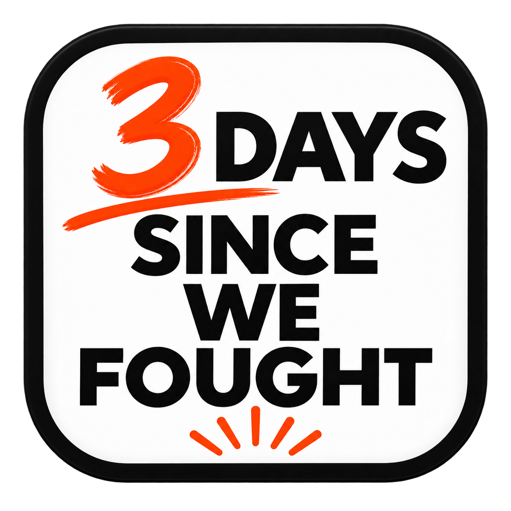

Days Since
We Fought
Track peaceful streaks, interrupt arguments before they boil over, reflect when things go sideways, and learn what actually helps your family recover.
Use DSWF before the fight happens.
When you feel yourself getting heated, tap I’m getting heated. Simmer Down gives you a short cooling exercise, helps you name the trigger, and asks you to choose the response you want to be proud of later.
Simple enough to use. Useful enough to learn from.
DSWF starts as a peace-streak tracker, but over time it becomes a private record of what triggers conflict, what helps interrupt it, and how each relationship changes.
Add your people
Create family members with a name and optional profile photo. Each relationship gets its own independent streak.
Keep the streak going
The clock counts real elapsed time. When a quarrel happens, tap We fought and that relationship starts fresh.
Interrupt the spiral
Use Simmer Down before a fight to cool off, identify the trigger, choose a response, and record what happened afterward.
Reflect, don’t scorekeep
A guided journal helps you process what happened, what you felt, what triggered it, and what you want to do differently next time.
See the history
Journal registry, calendar, and Simmer Down Log preserve the story behind the streaks—including pending check-ins and intervention outcomes.
Spot patterns
The on-device Insights Engine can surface recurring timing, triggers, emotions, streak trends, Simmer Down success rates, and which cool-down strategies appear to work best.
Track the interventions, not just the arguments.
Simmer Down Log
Every completed cool-down is recorded with the family member, trigger, chosen strategy, timestamp, and eventual outcome. Pending check-ins stay visible until you decide to complete them.
Insights that get better with use
DSWF looks for patterns in your own records: common triggers, difficult times of day, emotion patterns, changing streak lengths, relationship-specific trends, and whether certain Simmer Down strategies are associated with better outcomes.
Use it like an app.
Open DSWF in your phone’s browser once, then add it to your home screen. It launches in its own app window and supports offline use.
Android / Chrome
- Open DSWF in Chrome.
- Tap Chrome’s ⋮ menu.
- Choose Add to Home screen or Install app.
- Confirm the installation. DSWF will appear with your other apps.
iPhone / Safari
- Open DSWF in Safari.
- Tap the Share button.
- Scroll and choose Add to Home Screen.
- Tap Add. Launch DSWF from the new home-screen icon.
Your family data isn’t the product.
DSWF does not require an account or backend. Names, photos, streaks, fights, Simmer Down sessions, outcomes, and journal entries remain in your browser’s local storage unless you explicitly export a backup. Journal access can also be protected with a 4-digit PIN inside DSWF.
DSWF is free.
If it has helped your family and you want to support continued development, you can leave a voluntary tip.